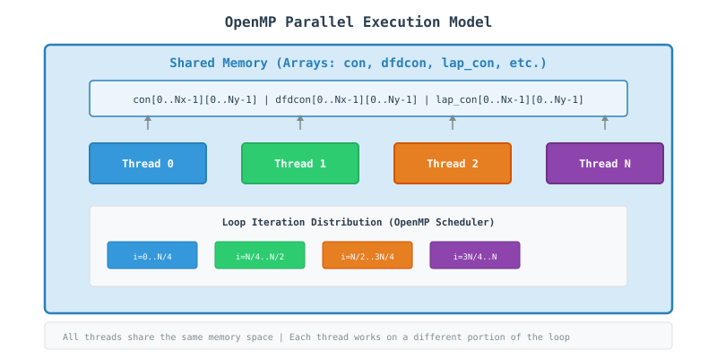
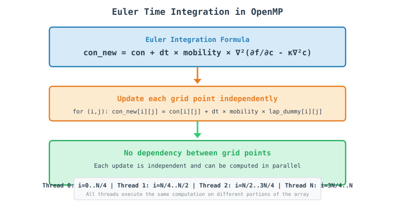
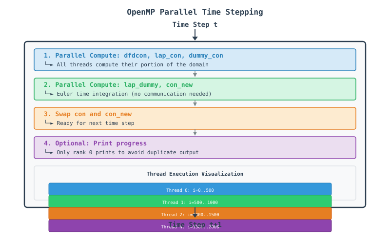

OpenMP Finite Difference Phase Field Code - A Tutorial Guide
Table of Contents
Introduction
This document provides a comprehensive tutorial on parallel computing using OpenMP (Open Multi-Processing) through a finite difference code that solves the Cahn-Hilliard equation—a fundamental model for phase separation in materials science. The code demonstrates how to take a serial computational problem and parallelize it across multiple CPU cores within a single compute node.
What You Will Learn
How to use OpenMP directives for parallel programming
Shared memory programming concepts
Loop parallelization strategies
Data management with shared arrays
Performance optimization techniques for multi-core systems
Understanding the Physics
The Cahn-Hilliard equation describes phase separation in binary alloys:
where:
\(c\): Concentration field
\(M\): Mobility
\(F\): Free energy functional
The code uses a 5-point finite difference stencil to discretize this equation spatially:
Why Parallelize with OpenMP?
The 2D domain is \(2000 \times 2000\) grid points. For realistic simulations:
Serial: 4 million points \(\times\) 1000 time steps = too slow for real-time exploration
OpenMP Parallel: Domain divided among threads, each handling \(\sim 1/N\) of the work using shared memory
OpenMP Concepts for Beginners
What is OpenMP?
OpenMP is a shared-memory parallel programming API that allows developers to write multi-threaded applications using simple compiler directives. Think of it as a way for multiple CPU cores within a single computer to work together on the same problem.
Key Concepts
Concept |
Analogy |
In Our Code |
|---|---|---|
Thread |
Individual worker |
CPU core executing a portion of the loop |
Parallel Region |
Team of workers |
Code block executed by multiple threads |
Worksharing |
Dividing tasks |
|
Shared Memory |
Common workspace |
All threads access the same arrays ( |
Private Variable |
Personal notebook |
Variables like |
Thread Execution Model

Step-by-Step Code Walkthrough
Step 1: Include OpenMP Headers
#include <omp.h>
What happens here?
OpenMP provides compiler directives and runtime functions.
The
omp.hheader declares the OpenMP API functions.Without this header,
#pragma ompdirectives still work, but runtime functions won’t.
Step 2: Set Domain Parameters
constexpr int Nx = 2000;
constexpr int Ny = 2000;
constexpr int nsteps = 1000;
Why these sizes?
2000×2000 = 4 million grid points.
Each thread works on a portion of this domain.
With 8 threads, each handles ~500×2000 = 1 million points.
Step 3: Allocate Arrays
Matrix con(Nx, std::vector<double>(Ny, 0.0));
Matrix con_new(Nx, std::vector<double>(Ny, 0.0));
Matrix dfdcon(Nx, std::vector<double>(Ny, 0.0));
Matrix lap_con(Nx, std::vector<double>(Ny, 0.0));
Matrix dummy_con(Nx, std::vector<double>(Ny, 0.0));
Matrix lap_dummy(Nx, std::vector<double>(Ny, 0.0));
Memory Layout:
Step 4: Initialize Microstructure
std::mt19937 rng(std::random_device{}());
std::uniform_real_distribution<double> dist(0.0, 1.0);
for (int i = 0; i < Nx; ++i) {
for (int j = 0; j < Ny; ++j) {
double r = dist(rng);
con[i][j] = con_0 + noise * (0.5 - r);
}
}
Important Points:
No parallelization needed here (small overhead).
All threads share the same
conarray.Initialization is done serially for simplicity.
Step 5: Parallel Computation Loop
#pragma omp parallel for collapse(2) \
shared(con, dfdcon, lap_con, dummy_con) \
private(ip, im, jp, jm)
for (int i = 0; i < Nx; i++) {
for (int j = 0; j < Ny; j++) {
// Compute dfdcon, lap_con, dummy_con
}
}
Key Directives Explained:
Directive |
Purpose |
|---|---|
|
Parallelize the following loop |
|
Collapse nested loops into a single parallel loop |
|
Variables accessible by all threads |
|
Each thread gets its own copy |
Step 6: Compute Free Energy Derivative
dfdcon[i][j] = A * (2.0 * con[i][j] * (1.0 - con[i][j]) * (1.0 - con[i][j]) -
2.0 * con[i][j] * con[i][j] * (1.0 - con[i][j]));
Why no communication needed?
All data is in shared memory.
No halo cells required.
Threads work independently on different parts of the array.
Step 7: Compute Laplacian
int jp = j + 1;
int jm = j - 1;
int ip = i + 1;
int im = i - 1;
if (im == -1) im = Nx - 1;
if (ip == Nx) ip = 0;
if (jm == -1) jm = Ny - 1;
if (jp == Ny) jp = 0;
lap_con[i][j] = (con[ip][j] + con[im][j] + con[i][jm] +
con[i][jp] - 4.0 * con[i][j]) / (dx * dx);
Why periodic boundaries work:
imandipwrap around using modulo logic.No communication overhead for boundary conditions.
Simple indexing with if statements.
Step 8: Time Integration
con_new[i][j] = con[i][j] + dt * mobility * lap_dummy[i][j];
con_new[i][j] = std::clamp(con_new[i][j], 0.00001, 0.99999);
Euler Integration:

Step 9: Data Swap
std::swap(con, con_new);
Why this works:
conbecomes the new state.con_newholds the old state (to be overwritten next iteration).No copying overhead - just pointer swap.
Visualization of Parallel Execution
Time Stepping Flow:

Performance Optimization
Loop Collapse
Without collapse(2):
#pragma omp parallel for
for (int i = 0; i < Nx; i++) {
for (int j = 0; j < Ny; j++) {
// Only outer loop is parallelized
// Each thread gets a range of i values
}
}
With collapse(2):
#pragma omp parallel for collapse(2)
for (int i = 0; i < Nx; i++) {
for (int j = 0; j < Ny; j++) {
// Both loops are collapsed into one
// Better load balancing for small Nx
}
}
When to use collapse:
Use it when: Nx is small or uneven.
Avoid it when: Nx is large and Ny is small (overhead).
Rule of thumb: Use for 2D/3D stencils with balanced dimensions.
Scheduling Strategies
Schedule |
Behavior |
Best For |
|---|---|---|
|
Fixed chunk sizes |
Regular workloads |
|
Runtime assignment |
Irregular workloads |
|
Decreasing chunk sizes |
Balanced workload |
|
Compiler decides |
General use |
Example:
#pragma omp parallel for schedule(dynamic, 32)
for (int i = 0; i < Nx; i++) {
// Dynamic scheduling with chunk size 32
// Threads grab chunks of 32 iterations
}
Cache Optimization
Memory Access Patterns:
Good (Column-major):
for (int j = 0; j < Ny; j++) {
for (int i = 0; i < Nx; i++) {
// Access con[i][j]
// Better cache locality
}
}
Bad (Row-major - Our Code):
for (int i = 0; i < Nx; i++) {
for (int j = 0; j < Ny; j++) {
// Access con[i][j]
// Strided access pattern
}
}
Why our code works:
C++ uses row-major layout by default.
The
vector<vector<double>>approach stores rows contiguously.Each thread works on a contiguous block of rows.
Running the Code
Compilation
Using GCC with OpenMP support:
g++ -std=c++17 -O3 -fopenmp -o cahn_hilliard main.cpp
Running
Basic Run (8 threads):
export OMP_NUM_THREADS=8
./cahn_hilliard
Performance Monitoring
Using Linux tools:
# Monitor CPU usage
htop
# Monitor thread activity
perf stat ./cahn_hilliard
# Monitor cache misses
perf stat -e cache-misses,cache-references ./cahn_hilliard
Common Pitfalls and Solutions
1. Insufficient Parallelism
Problem: Loop has too few iterations for many threads.
Solution: Use collapse or adjust chunk size:
#pragma omp parallel for collapse(2) schedule(dynamic)
for (int i = 0; i < Nx; i++) {
for (int j = 0; j < Ny; j++) {
// More iterations = better parallelization
}
}
2. Memory Bottlenecks
Problem: All threads accessing the same memory at the same time.
Solution: Use thread-local variables:
#pragma omp parallel for private(local_array)
for (int i = 0; i < Nx; i++) {
double local_array[100]; // Each thread gets its own copy
// Compute using local_array
}
Advanced Topics
SIMD Vectorization
OpenMP 4.0+ supports SIMD directives:
#pragma omp simd
for (int i = 0; i < Nx; i++) {
// Compiler will vectorize this loop
con_new[i] = con[i] + dt * lap_dummy[i];
}
GPU Offloading with OpenMP
OpenMP 4.5+ supports GPU offloading:
#pragma omp target teams distribute parallel for
for (int i = 0; i < Nx; i++) {
// Code runs on GPU
}
Appendix: Quick Reference
OpenMP Directives
Directive |
Purpose |
|---|---|
|
Create parallel region |
|
Distribute loop iterations |
|
Combined parallel + for |
|
Distribute independent tasks |
|
Execute code by one thread |
|
Execute code by master thread |
|
Ensure exclusive access |
|
Synchronize all threads |
|
Create a task |
OpenMP Clauses
Clause |
Purpose |
|---|---|
|
Thread-private variables |
|
Shared variables |
|
Private with initial value |
|
Private with final value |
|
Reduction operation |
|
Scheduling policy |
|
Collapse nested loops |
|
Don’t wait for other threads |
|
Conditional parallelization |
Environment Variables
Variable |
Purpose |
|---|---|
|
Number of threads |
|
Thread stack size |